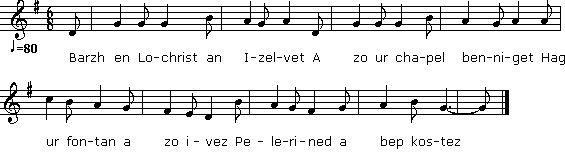
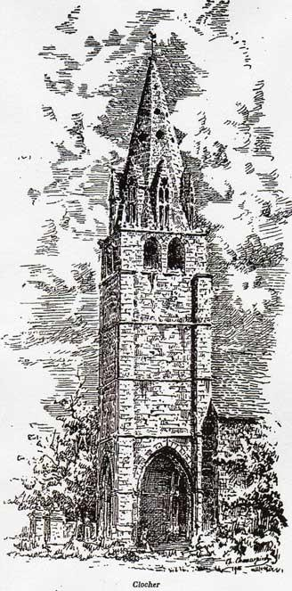

|
Barzh en Lochrist an Izelvet A zo ur chapel benniget Hag ur fontan a zo ivez Pelerined a bep kostez Lezomp ar fontan a gostez Ha deomp da di 'r wreg achane A ro d'ar paour an aluzenn Ro ane'añ a wir galon Un devezh oa 'barzh en anoue A venne pred holl dud he zi Arru zo ur paour da c'houlenn Un tamm bara pe ur c'hrignen (1) Un tamm bara me n'em eus ket; Tri deiz zo tamm n'em eus drebet Paourig, eme'i, et en ho tro Ur weach all me ho toublo (2) Et enta diwar dro ma zi Pe me loskao warnoc'h ma c'hi Ma c'hi warnoc'h mar tistagañ Ho rento reuzeudig amañ. E toull ar porzh er c'houziadenn (3) Ez eo marvet ar paour bihen Gourveet war ar c'houziadenn Hag ar c'hi bras en e gichen Un dra bennak aes da gompren An oac'h d'an ti a zo deuet Ha d'e wreg en eus lavaret Marv eo ur paour er c'houziadenn Ha d'e wreg en eus lavaret Marv eo ur paour er c'houziadenn Hag ar c'hi bras en e gichen Un dra bennag aes da glevet Me, eme'i, a zo kiriek Aluzenn de'añ 'm 'eus refuset Me rey lien d'hen lieniñ Peder blankenn d'hen archediñ II Ne oa beleg hi absolve Nemet betek Rom e aje Hi mab bihan de'i da denañ A oa diaes de'i da gentañ Hi mab bihan de'i da denañ A oa diaes de'i da gentañ Hag hi merc'h Mari goude-se Adeo deoc'h ma bugale ! E kêr Rom pa'n eo arriet Kofez d'ar Pab 'deus goulennet Kambr ar binijenn oe lakaet Dour, bara pad tri deiz da voued Ur bloaz warn ugent e voa bet Hep na voe soñj dimeus ar wreg Pa zigored an nor warni Yac'h e oa evel peb hini Hag hi e oa en hi vorzh Ha ruz 'vel ur bokedoù roz Bara ganti n'oa ket breinet Hag an dour n'oa ket disec'het III Neuze oe roet de'i koñje De donet d'ar gêr ac'hane War 'n hent bras pa oa o tonet Gant un den kozh eo 'n em gavet « Gwreg war an oad, din o leret P'lec'h e aet ha c'houlet monet ? - Da chapel Lochrist Izelvet Eno am eus c'hoant de vonet. - Setu ase ur walenn wenn P'ini ho reno penn da benn » He mab bihan oa o tenañ Disul oa e overn gentañ En Lochrist pa 'n eo arriet Ti he fried eo diskennet (4) Hennezh de'i en eus lavaret Da noz ne vije ket lojet Hag hi 'n hi c'hoañje 'war bank noazh E harp hi c'hein ouzh ur c'hravazh He fried en ti a zo aet Ha de'i neuze n'eus lavaret He fried en ti a zo aet Ha de'i neuze n'eus lavaret Penaos ne vije ket lojet Peogwir n'he anave'e ket Penaos n'am anave'et ket Ha me eo ho kentañ pried Hi mab pa en deveus klevet Traoñ deus e gampr eo diskennet Hounnezh sur ha gwir ec'he bet Ec'h eo ma mamm 'deus va ganet Hounnezh eo ar vamm 'deus va ganet 'Barzh ma gwele teuy da gousket |
Le sujetUne femme a refusé l'aumône à un mendiant ; celui-ci meurt dans l'étable. Son mari l'y trouve, et sa femme avoue que c'est de sa faute Aucun prêtre ne veut l'absoudre, elle doit aller à Rome demander son pardon au pape. On lui demande de rester trois jours dans une cellule avec du pain et de l'eau ; au bout de vingt-et-un ans, on ouvre la porte : elle est encore en pleine forme, le pain n'est pas pourri et l'eau est encore là Elle rentre au pays, où son mari refuse de la loger, prétendant qu'il ne la connaît pas. Mais son fils l'entend, la reconnaît, et lui dit qu'elle pourra dormir dans son lit Note d'Alfred Bourgeois Nous avons recueilli ce gwerz de vive voix dans le pays de Tréguier ; nous en possédons une autre version plus étendue, car elle ne contient pas moins de 142 strophes de 4 vers. Elle a été imprimée à Morlaix, chez Lanoë, successeur de Ledan. Elle ne nous apprend rien de plus, si ce n'est qu'avant l'édification de la chapelle d'aujourd'hui il n'existait sur le même emplacement qu'une fontaine miraculeuse à Guïnevez-Lochrist, aujourd'hui Plounevez-Lochrist, entre Plouescat et Lesneven, en plein pays de Léon (5). Aujourd'hui on prononce Izelvet et plusieurs donnent à ce mot la signification d'humilité. Dans les anciens actes, le monastère sur l'emplacement duquel a été édifiée la chapelle était désigné, sous le nom de Priatorus de loco Christi ou Humilioris arboris. Or, d'après la tradition, elle fut édifiée à l'endroit précis où saint Guénolé, en signe d'humilité, s'agenouilla au pied du plus petit arbre qu'il trouva.
C'est le véritable style hybride des imprimeurs, aussi préférons-nous notre version au point de vue philologique Le mot gwers est ici du féminin, car on lit ur vers, tandis que souvent on dit eun gwers, parce que eur vers signifierait aussi « une vente ». (1) Ar c'hrignen signifie proprement la gratte qui reste dans la marmite après qu'on a mangé la bouillie. (2) Ur veach est une forme du Léon employée ici au lieu de « ur vech » pour faire le vers (3) Gouziadenn signifie plutôt « la litière » (4) Mot à mot : « elle est descendue » ; on emploie souvent le passé indéfini pour le passé défini. (5) Aucune date n'est relatée dans le le gwerz.  |